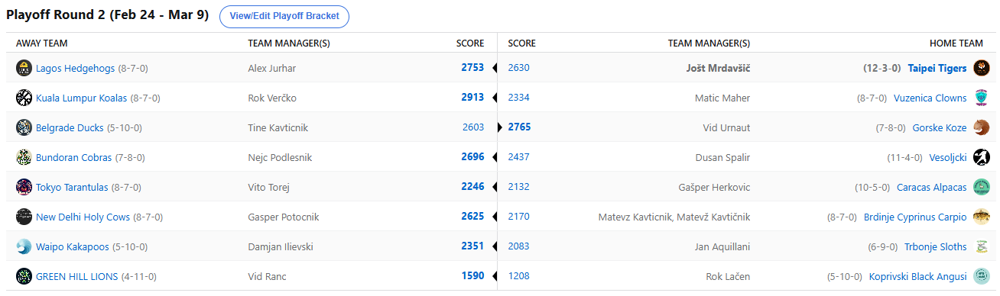

SEZONA 24/25
- Pravila in sistem tekmovanja
- Matchup1 (Oct 22 - Oct 27)
- Matchup2 (Oct 28 - Nov 3)
- Matchup3 (Nov 4 - Nov 10)
- Matchup4 (Nov 11 - Nov 17)
- Matchup5 (Nov 18 - Nov 24)
- Matchup6 (Nov 25 - Dec 1)
- Matchup7 (Dec 2 - Dec 8)
- Matchup8 (Dec 9 - Dec 15)
- Matchup9 (Dec 16 - Dec 22)
- Matchup10 (Dec 23 - Jan 29)
- Matchup11 (Dec 30 - Jan 5)
- Matchup12 (Jan 6 - Jan 12)
- Matchup13 (Jan 13 - Jan 19)
- Matchup14 (Jan 20 - Feb 26)
- Matchup15 (Jan 27 - Feb 2)
- Play-in (Feb 3 - Feb 23)
- Playoff 1 (Feb 24 - Mar 9)
- Playoff 2 (Mar 10 - Mar 23)
- Playoff 3 (Mar 24 - Apr 6)
2024/25 - Fantasy Koroška - sezona 8
PLAYOFF Round 1 - Quaterfinals (Feb 24 - Mar 9)
Poročilo kroga
Zaključeni so četrtfinalni obračuni in kakopak smo ostali brez vseh 4 najmočnejših moštev. Po lanski sezoni, ko smo v finalu videli dvoboj 1. in 2. iz rednega dela sezone,
se je letos situacija ponovno vrnila na stare tirnice, ko redni del ne pomeni nič in dokazala, da je šlo lani bolj za anomalijo kot karkoli drugega.
Začnimo z dvobojem med Kozami in Račkami. Moštvi, ki sta redni del sklenili izven deseterice, sta imeli neizmerno srečo z razporedom in se jima je odprla pot do visokih uvrstitev.
Ponujeno je bolje izkoristil Urnaut, ki je svoje Koze po treh sezonah znova popeljal do polfinala. Takrat so se mu stopničke sicer izognile, a Vid obljublja, da
bo tokrat drugače. Precej se je sicer namučil z Beograjskimi Račkami, katerih strateg Tine je navkljub grozno slabim napovedim vendarle nekako iztržil četrtfinalni
dvoboj, kjer se je solidno upiral, a na koncu vendarle ni imel dovolj moči, da bi mu uspelo priti še dlje. Against all odds je celo podpisal nekaj igralcev, za
razliko od svojega nasprotnika … no, očitno Vid tega ni potreboval. Morda v polfinalu dočakamo kak podpis?
Tam ga čaka nihče drug kot lanski zmagovalec Cicko. Tudi njemu se odpira pot do nove visoke uvrstitve, po tem ko se je v play-inu sprehodil čez Kavta, se mu je zdaj klanjal še Dule.
Slednji kar tradicionalno blesti v rednem delu, ko pa pride do izločilnih bojev, pa njegovi fantje pozabijo kako se igra košarka. Tudi tokrat ni bilo nič drugače in
Dušan se bo moral sprijazniti z uvrstitvijo med 5-8 mestom. No Embiid no problem kot kaže za Cickona, ali lahko postane drugi v zgodovini, ki zabeleži back to back
naslov prvaka? Vsekakor mu bo načrte poskušal prekrižati Urnaut in najbrž je okrog 98,5% lige na njegovi strani, a hejterji še nikoli prej niso zaustavili Cicka,
zakaj bi ga tokrat?
V zgornjem in roko na srce precej močnejšem delu bracketa, smo spremljali enosmerni promet na relaciji Kuala Lumpur – Vuzenica. Verčkonove Koale so dominirale od štarta do cilja in na
krilih neverjetnega Jokiča, ki bo lastnoročno najbrž razlog za 3rd round reversal drafta v prihajajoči sezoni, brez kakršnihkoli težav odpravile Klovne. Slednji so
puško v koruzo vrgli že takoj na začetku, skozi celoten matchup nas Matic namreč ni blagoslovil niti z enim samim podpisom, čeprav je naprimer njegov Nikola Vučevič
izpustil celoten matchup. Katastrofalen pristop in neresnost Maherja in do piknika si bomo omislili kakšno primerno kazen, če se ne spomnimo ničesar pa dobi en šamar.
Povsem drugače kar se streamanja tiče pa je bilo v obračunu veleumov – Jurharja in Joleta. Aleksu se je z nesrečo nasprotnika nasmehnila sreča in ponujeno je izkoristil. Kljub ne preveč
dobremu uvodu je s konstantnimi predstavami in neverjetnim podpisovanjem prostih igralcev – vse skupaj je zbral kar 673 TOČK od free agentov!!!! – uspel izločiti prvega
favorita. No, tudi Jole ni bil od muh kar se streamanja tiče, 540 točk je vsekakor zavidljiv dosežek, a žal se ob odsotnosti vseh štirih prvih pickov (!?!)
to ni dovolj poznalo. Pazljivo oko bi lahko ob tem zaznalo tudi neverjeten podatek – razlika 123 točk, ki jih je proti Joletu pridobil Fred je tudi TOČNA razlika
v matchupu …. Če torej fanta ne bi podpisala nič, bi se dvoboj končal izenačeno. Jole je po izpadu povedal sledeče: »By far najjača ekipa lige je izpadla … in to
proti Fredu … do zadnjega dne v igri brez prvih 4 pickov mislim da pove dovolj. Drugo leto je naše leto«. Ob tem je še namignil, da v nadaljevanju upa na finale med
Urnautom in Verčkom, pri čemer bi zmaga katerega koli od ostalih polfinalistov predstavljala eno veliko tragedijo.
Consolation bracketa ne bomo komentirali, naj omenimo le, da je izvrstno predstavo kljub izostankom pokazal Geps, ki je kakopak prinesel prediction pointse veliki večini napovedovalcev.
V maratonskem obračunu za 15. mesto pa še vedno dominira Ranac … not that anyone cares about that shit.
Polfinale sledi že danes in v dveh tednih kaotičnega razporeda bomo vsi stiskali pesti za svoje favorite. Srečno vsem in ne pozabite na predictione, ne da se mi vas spominjat 14812848128x.
Pa še točne številke pristreamanih točk v četrtfinalu:
In če vam še vedno ni jasno, potem vam pa res ni pomoči :D